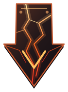
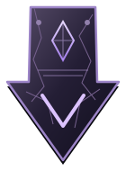
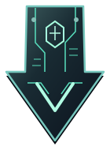

Kuro
01 / DESCUBRIMIENTO
NO TODO LO QUE FLOTA
ESTÁ PERDIDO
Mové el cursor o el dedo: el universo responde. Avanzá con el scroll para acercarte a su núcleo.
Hacia el núcleo Ω ↓02 / NÚCLEO
EL CORAZÓN DEL Ω
Una estructura suspendida en el vacío. El corazón de este universo conecta todas sus dimensiones.
Descubrir los portales ↓

